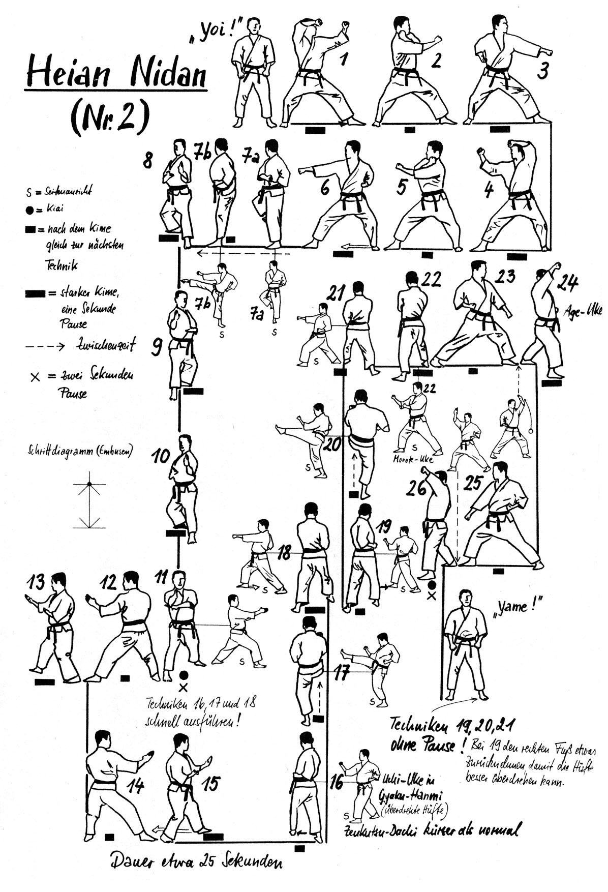

Heian Nidan

- Yoi (divaricando la gamba destra).
- Sposto la gamba sinistra verso sinistra e scendo in Kokutzu Dachi sinistro, partendo con entrambe le mani dal fianco destro eseguo contemporaneamente Uchi Uke sinistro e Age Uke destro.
- Richiamo il braccio sinistro in Soto Uke all'orecchio destro e richiamando il braccio destro con movimento circolare eseguo Oi Tzuki destro verticale.
- Eseguo Tettsui Uchi orizzontale sinistro richiamando il pugno destro al fianco.
- Mawatte ruotando in Kokutzu Dachi destro, partendo con entrambe le mani dal fianco sinistro eseguo contemporaneamente Uchi Uke destro e Age Uke sinistro.
- Richiamo il braccio destro in Soto Uke all'orecchio sinistro e richiamando il braccio sinistro con movimento circolare eseguo Oi Tzuki sinistro verticale.
- Eseguo Tettsui Uchi orizzontale destro richiamando il pugno sinistro al fianco.
- Richiamo la gamba sinistra e ruotando di schiena di 90° eseguo Yoko Geri (calcio spinto laterale) destro e una percossa con il dorso della mano destra (Uraken Uchi).
- Richiamo la gamba destra, scendo in Kokutzu Dachi in direzione opposta ed eseguo Shuto Uke sinistro.
- Avanzo 2 volte con Shuto Uke.
- Paro con il braccio sinistro mano aperta dall’alto verso il basso (Osae Uke) e avanzo con Mano a lancia (Yohon Nukite). Kiai.
- Sposto la gamba dietro verso sinistra facendo 3/4 di giro, vado in Kokutzu Dachi e paro con Shuto Uke sinistro.
- Avanzo di un passo a 45°, paro con Shuto Uke destro.
- Sposto la gamba avanti e mi riporto sulla perpendicolare, paro con Shuto Uke destro.
- Avanzo di un passo e paro con Shuto Uke sinistro.
- Sposto la gamba sinistra verso sinistra e ruoto di 45°, eseguo parata uncinante (Sukui Uke) destra.
- Eseguo calcio frontale (Mae Geri) destro, pugno opposto alla gamba (Gyaku Tzuki) sinistro.
- Accorcio la posizione ed eseguo Gyaku Uchi Uke sinistro.
- Eseguo Mae Geri sinistro, Gyaku Tzuki destro.
- Avanzo in Zenkutsu Dachi ed eseguo una parata rinforzata (Morote Uke) destra.
- Sposto la gamba sinistra a 90° verso sinistra, di schiena, Gedan Barai sinistro.
- Ferma la posizione, ruoto il busto di 45°, richiamo il braccio sinistro all'addome e poi eseguo Age Uke sinistro mano aperta.
- Avanzo con la gamba destra ed eseguo Age Uke destro.
- Sposto la gamba destra verso destra, di schiena, Gedan Barai destro.
- Ferma la posizione, ruoto il busto di 45°, richiamo il braccio destro all'addome e poi eseguo Age Uke destro mano aperta.
- Avanzo con la gamba sinistra ed eseguo Age Uke sinistro. Kiai.
- Yame! Sposto la gamba sinistra e torno in posizione di Yoi!